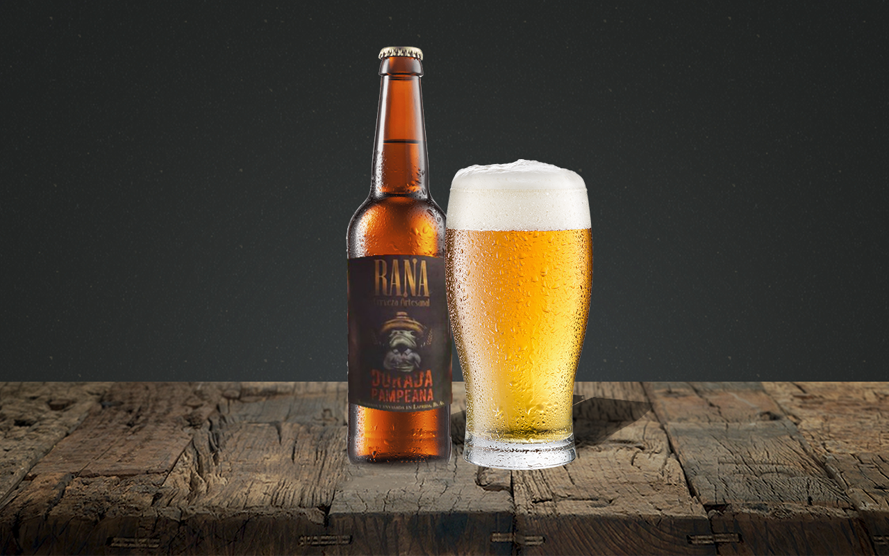

Rana Dorada Pampeana
Cerveza de produccion local, de color palido con poco cuerpo y un amargor sutil, ideal para los recien iniciados en el mundo cervezero.
Monos Sabios IPA
Cerveza de cuerpo medio con intenso aroma y sabor a lúpulos. Es de color amarillo pajizo con espuma blanca, presenta sabor y aroma a frutos cítricos y tropicales con un amargor limpio.
Monos Sabios Scotish
Cerveza de cuerpo medio, color cobrizo y espuma blanca. Presenta un balance orientado a la malta con notas a caramelo, toffee y bizcocho. Su bajo amargor le confiere una gran tomabilidad en cualquier ocasión.
Monos Sabios Stout
Una cerveza color negro azabache con sabor tostado, notas a café y chocolate amargo. Con espuma marrón, cuerpo medio a pleno y un leve dulzor de caramelo.